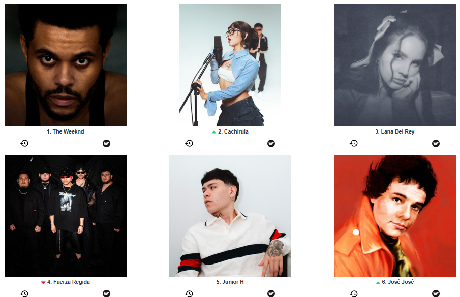

Presentemos a los top artistas de mi Spotify...
Desde siempre he sido muy versatil en el lado de la musica, mi top de artistas de Spotify es el claro ejemplo de ello, en primer lugar siempre por los siglos de los siglos estará The Weeknd, ya lo que sigue puede variar, puedo estar depresivo como Lana del Rey o Junior H, puedo ser alucin para escuchar Fuerza Regida, o simplemente soy migajero de corazón para escuchar José José. Pero mi mood favorito es CACHIRULO!
Un dato curioso de todo esto es que, dependiendo que artista escuche en la mañana es como quisiera que fuera mi dia, exceptuando los artistas que hablan de desamor, claro está:P